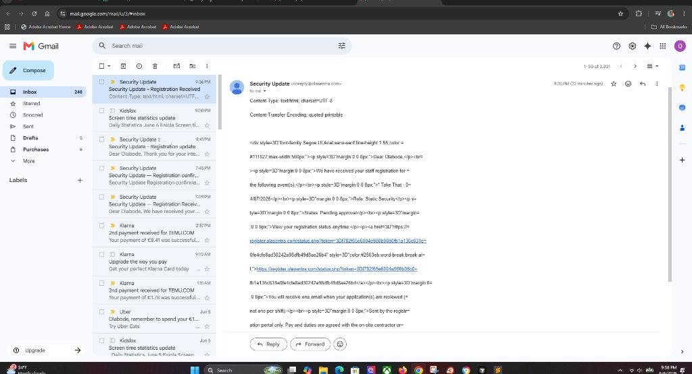
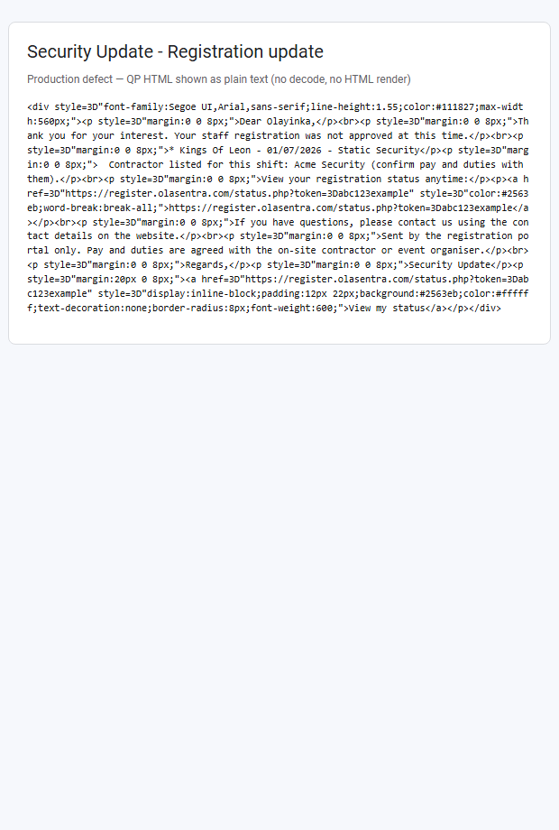

Generated 6 June 2026 · Live defect reported · Audit only — no code changes · Supersedes pass/fail interpretation in docs/EMAIL-MIME-FIX-REPORT.html for SMTP-delivered mail
Why production still looks broken: The buildEmailMimePayload() multipart fix is present in repo and was deployed, but production uses SMTP transport, and smtpDotStuff() in includes/smtp-mailer.phpcorrupts every CRLF in the MIME body (\r\n → \r\r\n) before DATA transmission. That breaks multipart/alternative parsing in clients. Users then see raw inner MIME headers (Content-Type:, Content-Transfer-Encoding:), quoted-printable HTML (=3D, <div>, <br>), and non-clickable links — matching live screenshots.
1. Live symptoms (user-reported)
Raw HTML visible in message body
Content-Type and Content-Transfer-Encoding lines visible inside the email body
<div>, <p>, <br> tags visible
=3D quoted-printable artefacts and soft-break word splits
Broken formatting and non-clickable links

Live production (6 Jun 2026) — “Registration Received” from noreply@olasentra.com. Inner part headers (Content-Type:, Content-Transfer-Encoding: quoted-printable) appear inside the message body, plus raw <div>/<p> and =3D artefacts. This signature matches SMTP smtpDotStuff() CRLF corruption breaking multipart/alternative parsing — not the original builder-only defect.

Earlier pattern — QP HTML shown undecoded (pre-multipart fix). Similar visual result; live mail additionally leaks inner MIME headers.Expected — HTML decoded and rendered. Requires intact multipart boundaries on the SMTP wire.
2. Investigation questions
Question
Answer
Was the root cause in EMAIL-MIME-ROOT-CAUSE-REPORT correct?
Yes — single-part HTML-only MIME discarded plain text. That caused QP HTML shown as plain text.
Was the multipart fix implemented?
Yes — buildEmailMimePayload() in includes/mailer.php emits multipart/alternative when both plain + HTML exist.
Was it deployed?
Yes — deploy.ps1 uploads includes/mailer.php (confirmed 6 June 2026). Production cron email-production-verify.php uses same file via sendEmail().
Is deployed code executed on production sends?
Yes — production verify reports transport: smtp. All sendEmail() paths call sendSmtpMessage() when SMTP is configured.
Why do prior reports show PASS?
Verification tested buildEmailMimePayload() output beforesmtpDotStuff(). No test parsed the post-SMTP wire payload in a real client inbox.
Is there a bypass path?
SMTP dot-stuffing layer — not a separate mailer. All dual-format templates still call sendEmail() → sendSmtpMessage() → smtpDotStuff(). No PHPMailer / apply-site duplicate mailer found.
3. Exact root cause (current production)
3.1 Layer 1 — original defect (fixed in builder)
Before fix: buildEmailMimePayload() returned text/html + quoted-printable only
→ Plain-text clients showed undecoded HTML (rejection-broken-gmail.png)
3.2 Layer 2 — active production defect (SMTP wire corruption)
sendSmtpMessage() in includes/smtp-mailer.php:
$mime = buildEmailMimePayload($body, $htmlBody); // ✅ multipart correct
$payload = headers + "\r\n\r\n" + $mime['body']; // body already uses \r\n
$payload = smtpDotStuff($payload); // ❌ corrupts line endings
smtpDotStuff():
$payload = str_replace("\n", "\r\n", $payload);
For a string already using CRLF, each \n in \r\n is expanded → \r\r\n
Result: 47 corrupted line endings in a typical rejection message (audit run)
3.3 Why clients show MIME headers in the body
When boundary lines and part headers are separated by \r\r\n instead of RFC 2046 \r\n, many clients (Gmail Android, Outlook, Apple Mail) fail to parse multipart and display the entire DATA payload as a single plain-text blob — including:
Content-Type: text/plain; charset=UTF-8
Content-Transfer-Encoding: 8bit
Content-Type: text/html; charset=UTF-8
Quoted-printable HTML body with =3D
3.4 PHP mail() path (not production default)
sendEmail() php_mail branch calls buildEmailMimePayload() directly without smtpDotStuff(). If transport were switched to php_mail, multipart would likely parse correctly — but production verify confirms SMTP.
4. Code paths reviewed
File
Role
Finding
includes/mailer.php
buildEmailMimePayload(), sendEmail()
Multipart builder correct. Routes SMTP vs php_mail.
includes/smtp-mailer.php
sendSmtpMessage(), smtpDotStuff()
Defect: double-CR corruption on CRLF payloads.
includes/notifications.php
Rejection, confirmation
Uses sendEmail($text, $html) — hits SMTP path.
includes/access-pass-email.php
Access pass
Same.
includes/reminders.php
Event reminder
Plain-only — less affected (no inner MIME headers), still gets CRLF corruption.